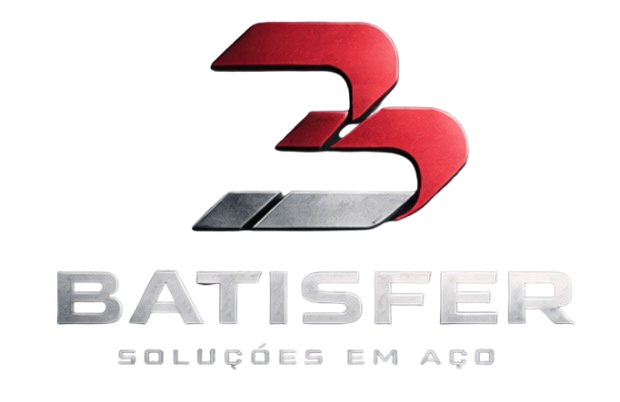

Histórico de mercado
Atuação contínua no mercado de ferro e aço com posicionamento sólido e foco em relacionamento de longo prazo.

A BATISFER atende demandas em ferro e aço com maquinário CNC, leitura técnica do projeto e produção preparada para acelerar sua operação sem improviso.
Uma operação construída ao longo de mais de 15 anos, com equipamento CNC, leitura técnica do projeto e foco em precisão dimensional para quem não pode depender de soluções improvisadas.
Atuação contínua no mercado de ferro e aço com posicionamento sólido e foco em relacionamento de longo prazo.
Equipamentos CNC para corte e dobra com repetibilidade e acabamento alinhados à exigência industrial.
Produção ajustada à necessidade real de cada operação, com leitura técnica do escopo antes de fabricar.
Atendimento orientado para viabilizar a cotação com clareza, agilidade e foco no prazo da sua operação.
Do produto em estoque ao blank sob medida: portfólio completo para atender diferentes etapas da sua cadeia produtiva com agilidade e rastreabilidade técnica.


Corte, dobra e furação executados com equipamento CNC e capacidade de 90 toneladas, orientados por medidas e desenho técnico para garantir padrão repetível em lotes industriais.
Guilhotina CNC para produção com repetibilidade e acabamento confiável.
Cortes precisos para reduzir retrabalho, garantir encaixe nas próximas etapas e manter padrão dimensional em lotes industriais.

Dobradeira CNC para ângulo consistente e conformação técnica.
Dobra com alto controle para estruturas, reforços e componentes metálicos que exigem uniformidade e confiabilidade de execução.

Metaleira de 90 toneladas para demandas com esforço, precisão e velocidade de preparo.
Execução para chapas, cantoneiras, ferro chato e redondos laminados com mais capacidade produtiva e melhor padronização do processo.

Você envia medidas, espessuras, desenho técnico e volume esperado para análise inicial.
A BATISFER verifica viabilidade, processo ideal, material e pontos críticos antes da cotação.
Com o pedido aprovado, a operação entra em corte, dobra ou furação com padrão industrial.
O material segue preparado para aplicação, com menos improviso na linha e mais previsibilidade no prazo.
Estime rapidamente o peso da matéria-prima (chapas) para o seu lote, facilitando o dimensionamento logístico e financeiro.
*Estimativa para aço carbono padrão (peso específico ~7,85 g/cm³)
A BATISFER iniciou suas atividades em 2009 atuando na representação dos principais distribuidores de ferro e aço do país.
Com a evolução da demanda industrial, ampliou sua atuação para produtos e serviços de corte, dobra e furação sob medida, alinhando fornecimento e beneficiamento em uma só operação.
O posicionamento atual prioriza confiança, agilidade comercial e percepção de capacidade técnica, com foco em atender empresas que não podem depender de soluções improvisadas.
Envie seu projeto, medidas e necessidade de material. Quanto mais informação técnica você enviar, mais rápido a equipe comercial consegue estruturar a proposta.
Use o formulário ou fale direto pelo WhatsApp para iniciar sua análise de cotação.
Envie agora
Inclua medidas, espessuras, material, volume e arquivos do projeto para agilizar o atendimento.